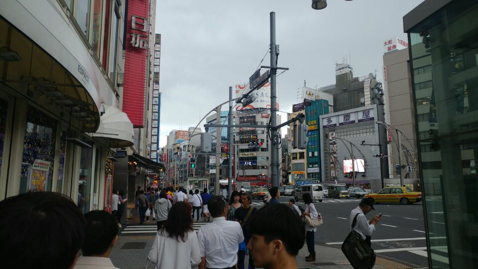
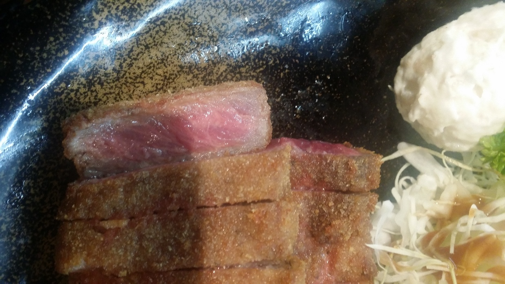
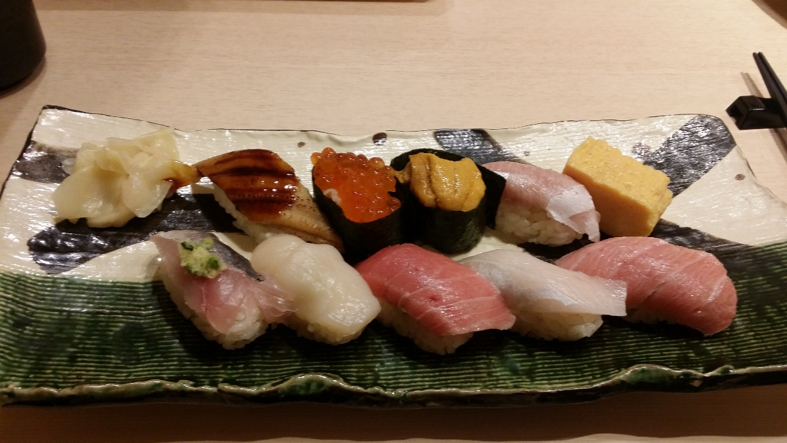
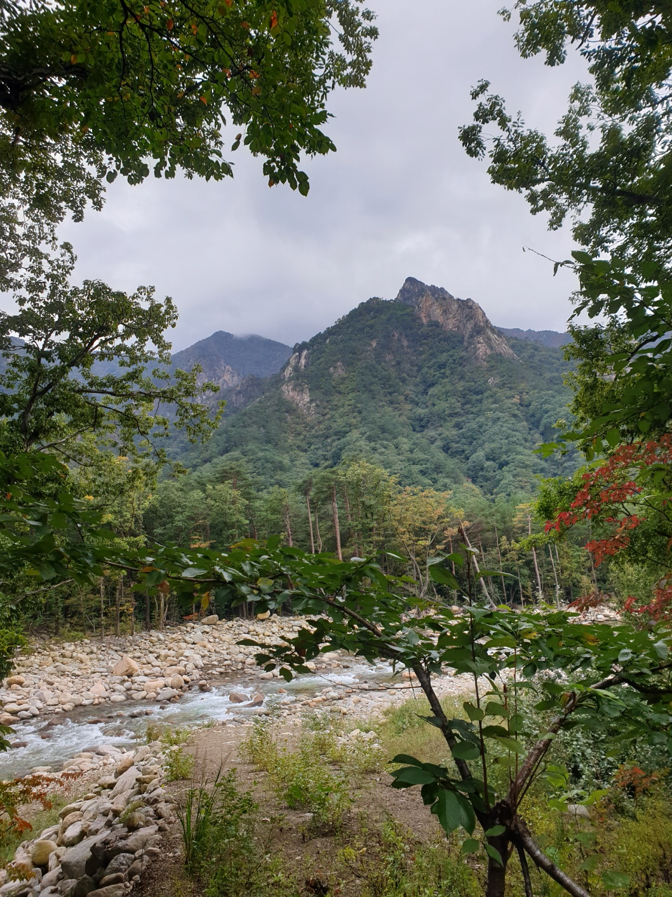
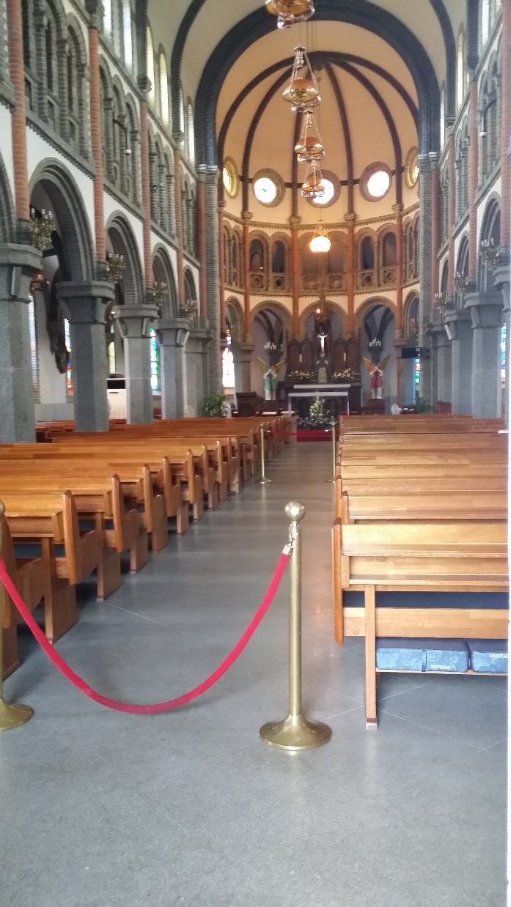
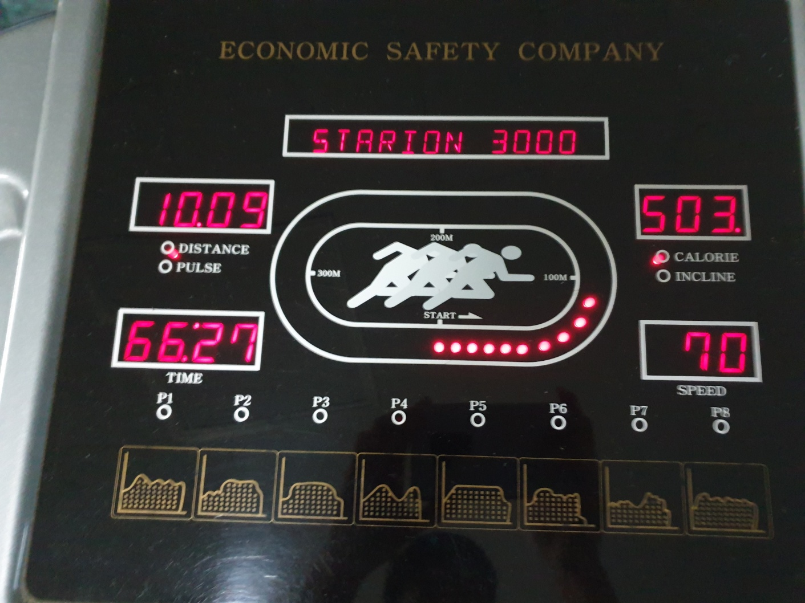
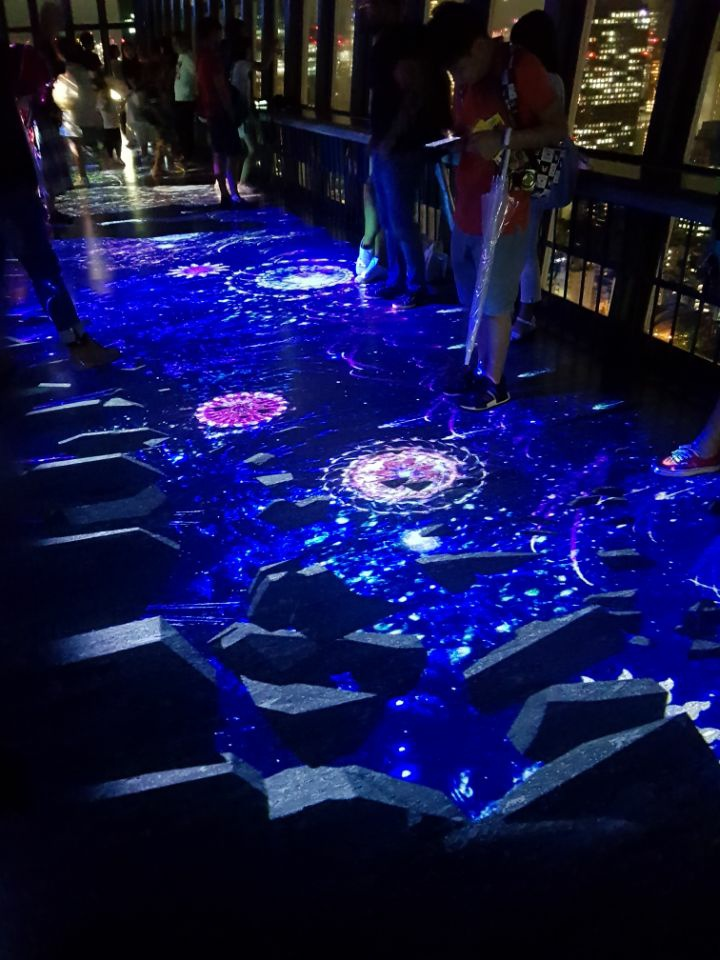

기억에 남는 순간들







안녕하세요, 반도체 회사에서 설비 자동화 업무를 몇년간 진행하고 제 최종 목표인 해외 취업을 쫓아 우테코에 들어오게 된 앵버입니다. 평소에는 안정적인 것을 선호하는 성격이지만, 비전에 있어서는 새로운 도전을 마다하지 않습니다. '지난 제 자신과 비교하며 성장하는 과정을 즐기자!'' 라는 마인드로 천천히 성장할 계획입니다~


액션, SF 장르를 좋아해서 좋아하는 작품이 생기면 여러 번 보는 경우가 꽤 있다. 위 세 작품 모두 여러 번 시청한 작품들로 평소에 경험할 일이 없는 것들이 소재가 되기 때문에 흥미롭고 재밌게 보는 것 같다.

평소에 생각이 많고 감정 컨트롤이 부족한 나에게 적합한 책이라고 생각해 "어른스럽게 감정을 컨트롤하는 사람"이 되었으면 하는 바람에서 독서 리스트에 추가해 읽었다. 이 책의 전반적인 느낌은 친하게 지내던 형에게 "너 잘 못 아니다.", "힘내라" 같은 말을 듣는 느낌이다. 주제마다 작은 소주제가 있고 소주제는 한두 페이지로 이루어져 있는데, 나는 한 소주제를 읽을 때마다 살짝 울컥하는 감정이 오곤 해 "나도 모르게 마음에 상처가 조금 있었나?", "나도 모르게 누군가에게 위로받고 싶었나?" 이런 생각이 들었었다. 이 책 한 권으로 감정 컨트롤을 잘할 수 없겠지만, "어른스럽게 감정을 컨트롤하는 사람"에는 한 발짝 앞으로 다가간 느낌이다.